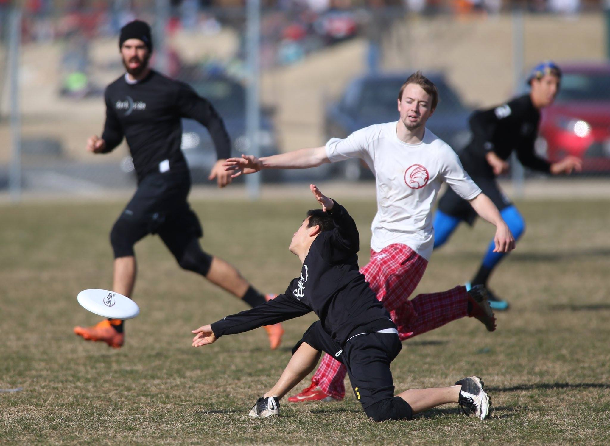
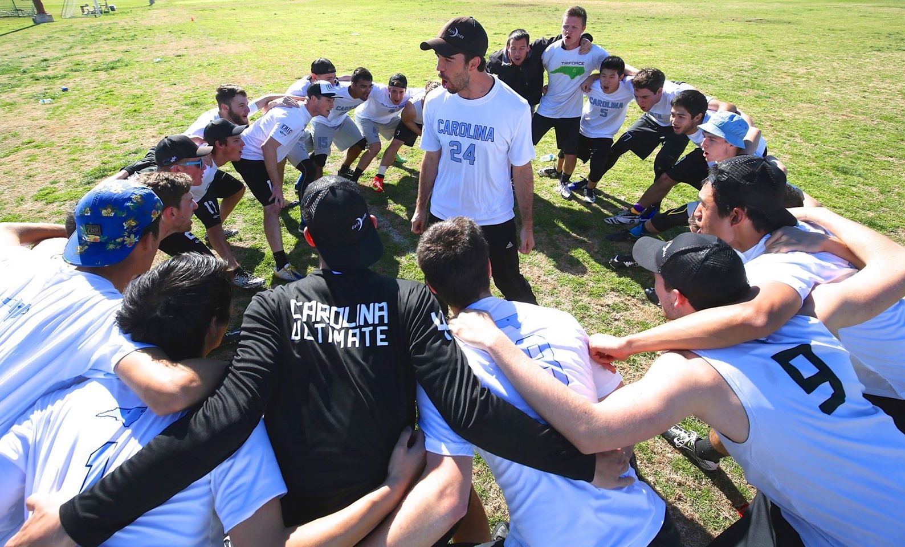

The Regular Season
While Darkside practices year-round, the real season starts in the spring. They attended 2 important tournaments before the series, Queen City Tune Up and Centex Invite.
Queen City Tune Up
Darkside came into Queen City ranked #1 in the tournament and pool play on Saturday reflected their rank as they went 4–0. Their closest games were 13–8 victories over Iowa and Wisconsin.
The dominant showing by Darkside on Saturday gave them a bye straight into the quarter-finals on Sunday where they soundly defeated Luther in a 15–1 route. The semi-final game against Massachusetts did not go quite as well and Darkside ended up losing 7–12 in a disappointing finish. Adding on top of the loss, UNC Wilmington, Darkside’s rival ended up winning the tournament.
Centex Invite
Looking to improve upon their performance from Queen City, Darkside made their longest trip of the regular season to central Texas. On Saturday they fought their way to a 4–0 record, recording a double game point victory over Colorado, and two other games decided by a mere 2 points each.
Sunday started off with a rematch against Colorado. It came down to the wire again with Darkside pulling off another universe point victory. Unfortunately the strenuous win took too much out of them, and they could not overcome a strong Texas A&M team in the semi-finals.
Time was running out as Darkside headed into the post-season. Click the link below to read more about the series.